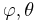
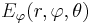
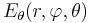
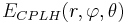

NF2FF
From openEMS
Create and calculate the near-field to far-field transformation. The NF2FF box must be defined before running the FDTD simulations.
NF2FF Creation
The function CreateNF2FFBox will create surface dump-boxes surrounding the structure. The hdf5 file format is used to store the electric and magnetic fields necessary to perform the near-field to far-field transformation.
Create a near-field to far-field box:
[CSX nf2ff] = CreateNF2FFBox(CSX, name, start, stop, varargin)
The parameters are:
- CSX: The CSXCAD data structure to be manipulated.
- name: The name of the nf2ff calculation, it will be part of the hdf5 dump filenames
- start/stop: Start and stop coordinates of the nf2ff box, it should contain all structures and should not be inside the pml!
Return parameters are:
- CSX: The manipulated CSXCAD data structure.
- nf2ff: A data structure containing all necessary information to perform the near-field to far-field transformation. See CalcNF2FF below.
Optional/variable arguments are:
- Frequency: Specify a frequency vector to save disk-space. By default time-domain data will be stored.
- OptResolution: Dump fields only for a given optimal resolution (e.g.: 'OptResolution', c0/max_freq/unit/15) to save disk-space
- Directions: A 6x1 array, showing which directions are enabled/disabled for the NF2FF calculations. The numbers in the array represent [x(-), x(+), y(-), y(+), z(-), z(+)]. Each value can be either 1 (enabled) or 0 (disabled). Usually this is only used to disable some directions in case of a full cylindrical mesh. For a Cartesian mesh this should not be changed.
NF2FF Calculation
Note:: This function can only be used after a simulation has been performed and all electric and magnetic fields have been stored as defined by CreateNF2FFBox.
IMPORTANT: Make sure to define the correct nf2ff phase center, aka. central antenna position! See optional parameter below!! Default is [0 0 0]
The function to calculate the far field is called by
nf2ff = CalcNF2FF(nf2ff, Sim_Path, freq, theta, phi, varargin)
The parameters are:
- nf2ff: data structure created by CreateNF2FFBox
- Sim_Path: path to simulation data
- freq: array of frequencies to analyze
- theta,phi: spherical coordinates to evaluate the far-field on (in radians)
Optional parameters are:
- Center: nf2ff phase center, default is [0 0 0]. Make sure the center is never outside of your nf2ff box. Unit is always meters.
- Mode:
- 'Mode', 0 -> read only, if data already exist (default)
- 'Mode', 1 -> calculate anyway, overwrite existing
- 'Mode', 2 -> read only, fail if not existing
- Outfile: alternative nf2ff result hdf5 file name. Default is: <nf2ff.name>.h5
- Verbose: set verbose level for the nf2ff calculation 0-2 supported
NF2FF Output
After performing the NF2FF calculations the nf2ff struct will look like:
nf2ff =
name: 'nf2ff'
filenames_E: {'nf2ff_E_xn' 'nf2ff_E_xp' 'nf2ff_E_yn' 'nf2ff_E_yp' 'nf2ff_E_zn' 'nf2ff_E_zp'}
filenames_H: {'nf2ff_H_xn' 'nf2ff_H_xp' 'nf2ff_H_yn' 'nf2ff_H_yp' 'nf2ff_H_zn' 'nf2ff_H_zp'}
directions: [6x1 double]
CoordSystem: 0
xml: 'Sphere_RCS_small/nf2ff.xml'
hdf5: 'Sphere_RCS_small/nf2ff.h5'
r: 1
theta: [181x1 double]
phi: [361x1 double]
freq: [20x1 double]
Prad: [20x1 double]
Dmax: [20x1 double]
E_theta: {1x20 cell}
E_phi: {1x20 cell}
E_norm: {1x20 cell}
P_rad: {1x20 cell}
The content of the individual fields is as follows:
- name: The name of the NF2FF box used to calculate the far field.
- filenames_E: (internal) Filenames of all electric field dump boxes for each direction.
- filenames_H: (internal) Filenames of all magnetic field dump boxes for each direction.
- directions: (internal) A 6x1 array, showing which directions are enabled/disabled for the NF2FF calculations. The numbers in the array represent [x(-), x(+), y(-), y(+), z(-), z(+)]. Each value can be either 1 (enabled) or 0 (disabled).
- CoordSystem: (internal) Type of coordinate system for the raw field-data. Can be either a Cartesian (0) or a cylindrical (1) coordinate system.
- xml: (internal) Path to an xml-file which contains the values of analyzed frequencies and angles as well as the hdf5 file names where the fields are stored.
- hdf5: (internal) Path to the hdf5-file containing all the nf2ff calculated data
- r: Radius or distance to the phase center used for the nf2ff calculation (in meter).
- theta, phi: values of the polar angles of the calculated far field ()
- frequencies: values of the analyzed frequencies
- Prad: Total radiated power for each frequency (can be used for antenna efficiency calculation).
- Dmax: max. antenna directivity
- E_theta: Complex theta component of the electric far-field for each analyzed frequency and angle ().
- E_phi: Complex phi component of the electric far-field for each analyzed frequency and angle ().
- E_cprh: (openEMS >v0.0.30) Complex amplitude of right-handed circular polarized electric far-field for each analyzed frequency and angle (
 ).
). - E_cplh: (openEMS >v0.0.30) Complex amplitude of left-handed circular polarized electric far-field for each analyzed frequency and angle ().
- E_norm: Complex electric field amplitude of the far-field for each analyzed frequency and angle ().
- P_rad: The energy flux in the far field for each analyzed frequency and angle ().

{kind=link}